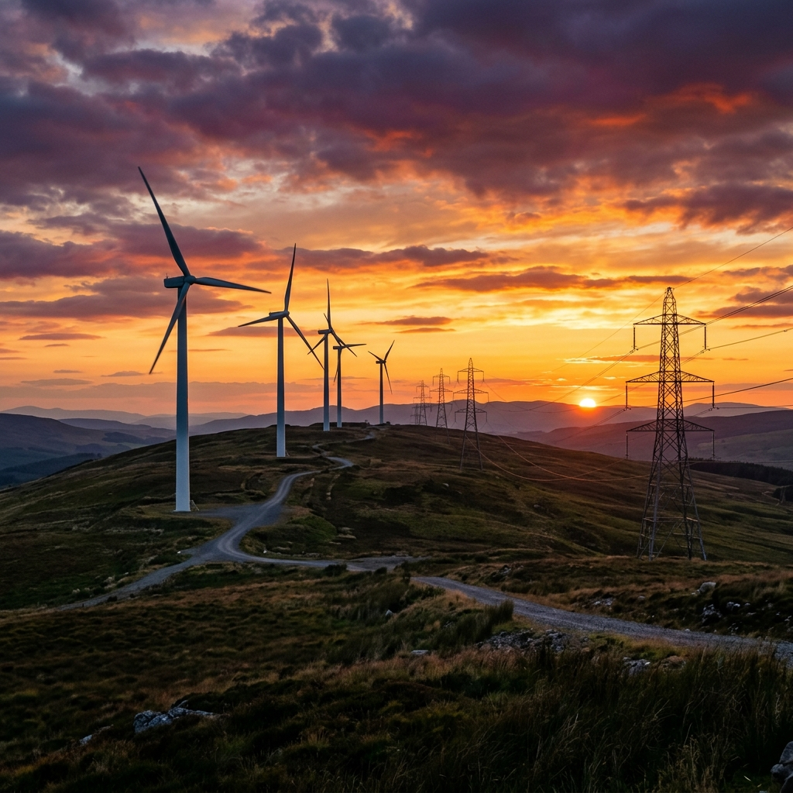

Industries I Serve
I capture the scale, engineering detail, and human grit across three core sectors, delivering polished assets for bids, reports, and PR.
Heavy Manufacturing & Assembly
Showcasing automated assembly floors, tool fabrication lines, and precision welding workshops with dramatic cinematic light profiles that honor worker craftsmanship.
- Macro detail & worker portraits
- Dynamic action action-capture
Civil Infrastructure & Construction
Documenting major roadworks, bridge build sequences, structural pours, and transit system developments for engineering briefs and PR updates.
- Wide-angle engineering scope
- Drone surveys & time-lapse

Energy, Utilities & Power Grid
Cinematic imagery of green energy wind farms, solar fields, hydro-dams, and transmission grids illustrating corporate scale and sustainability.
- Environmental impact
- Substation & high-voltage views
Visual Showcase
Slide the interactive handle to witness how raw flat-profile captures are developed into high-contrast, premium, color-graded corporate assets ready for publication.
Trusted by Engineering & PR Firms
Read how my industrial photography assets have elevated bids, annual reports, and media kits for leading firms.

“Indus Photo captured our heavy gas turbine plant with absolute precision. The photographer integrated seamlessly with our site safety guidelines, worked around active machinery, and delivered spectacular, PR-ready images.”
Marcus Sterling
VP of Engineering, Apex Systems

“Managing media campaigns for civil works requires dynamic, compliant imagery. Indus Photo coordinated bridge-build photography with aerial drone surveys. Having fully OSHA-certified crews makes site booking stress-free.”
Sarah Jenkins
PR Director, Communications

“For our corporate ESG reports, we needed energy transition portfolio assets. Indus Photo shot wind turbining projects under extreme conditions. The cinematic quality is absolute gold.”
Dave Kaczmarek
ESG Lead, Great Lakes Energy Dev
Fully Certified for Hazardous Industrial Environments
Unlike generic commercial photographers, Indus Photo operates with a safety-first methodology. I carry all necessary regulatory site permissions, undergo routine physical hazard briefings, and wear standard-compliant PPE on every shoot.
About safety protocolsOSHA-30 Certified Crews
I am OSHA-30 trained to identify hazards and operate safely alongside manufacturing lines.
FAA Part 107 Drone License
Fully licensed commercial drone pilots permitted for mapping utility towers and structural progress.
TWIC & Port Access Cleared
I hold active Transportation Worker Identification Credentials for secure marine terminal and infrastructure entry.
$5M Commercial General Liability
Full insurance coverage designed for enterprise site managers and civil engineering operations.
Request a Site Photography Proposal
Partner with the premium photographer trusted by infrastructure operators and PR teams. Tell me about your site safety specifications, location boundaries, and target media deadline.
Request Proposal